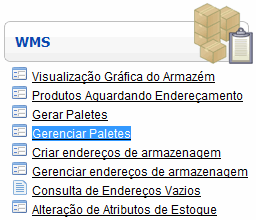
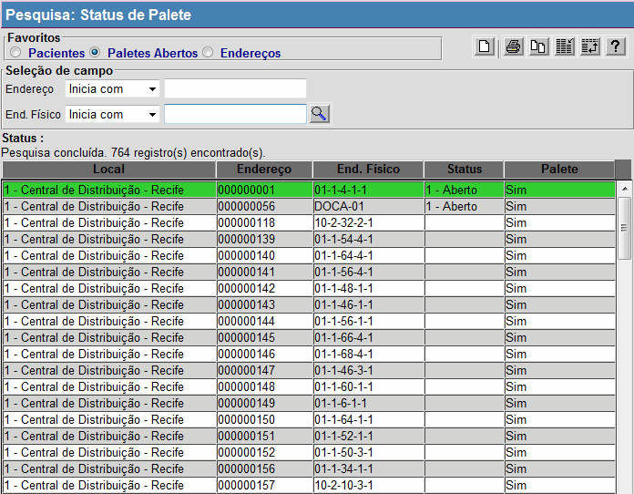
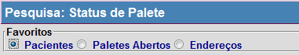
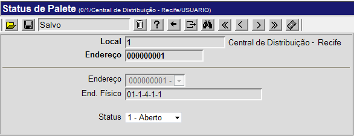
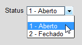

Gerenciar Paletes [ Voltar ]Utilize este formulário para gerenciar os paletes cadastrados no sistema. Para acessar o formulário, vá ao menu "WMS" na página inicial e clique no formulário "Gerenciar Paletes".
Após clicar no formulário, o sistema abrirá a seguinte tela: 
Execute os passos abaixo para localizar e abrir o palete desejado: 1º Passo: selecione um dos favoritos de pesquisa que melhor se aplica à pesquisa. Os favoritos disponíveis para a pesquisa de paletes são: Pacientes, Paletes Abertos e Endereços. 
Observação: para mais informações sobre as funcionalidades de pesquisa, ver o manual Introdução ao Sistema. 2° Passo: selecione com um clique o palete desejado. Assim que selecionado, o registro será aberto na tela "Status de Palete" , onde serão exibidos todos os dados do mesmo. 
3º Passo: se for necessário, selecione o status do palete. As opções são "Aberto" ou "Fechado". 
Observação: lembre de clicar no botão Caso seja necessário, nesta página também será possível excluir o palete. Nesse caso, clique no botão |